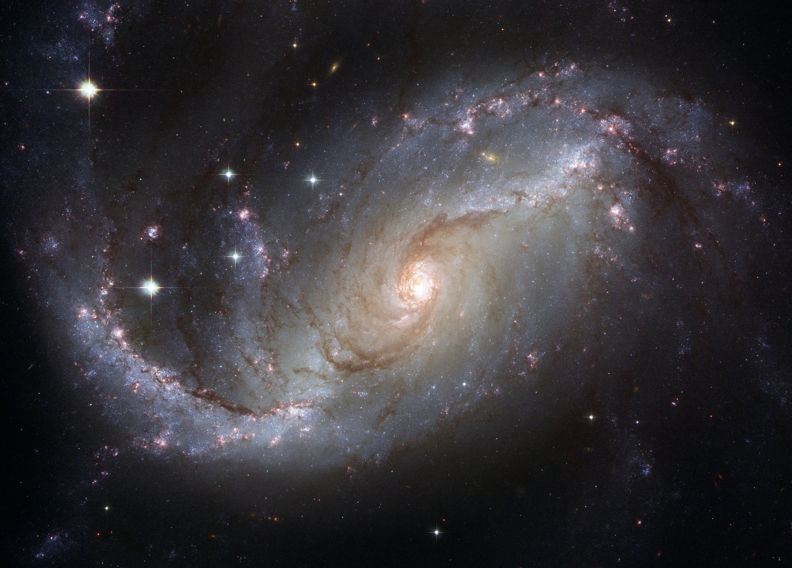
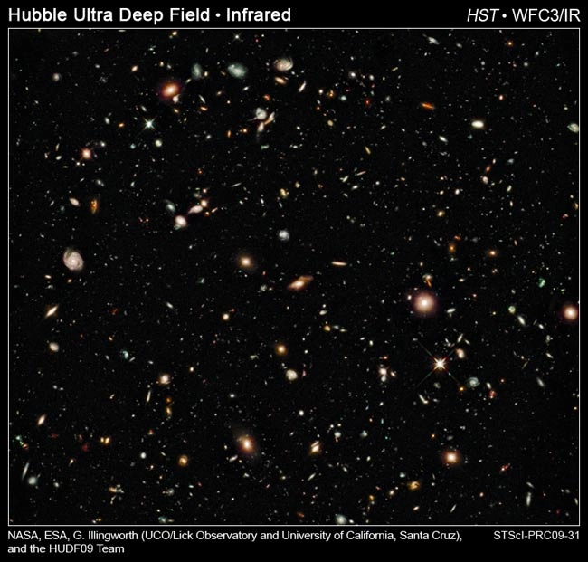

Сьогодні астрономи оголосили, що оновлений космічний телескоп «Габбл» виявив найдавнішу та найвіддаленішу галактику.
Найслабкіші та найчервоніші об’єкти на нових зображеннях Хаббла – це галактики, які утворилися через 600 мільйонів років після теоретичного Великого вибуху, який стався приблизно 13,7 мільярдів років тому. Отже, ці об’єкти розташовані приблизно за 13,1 мільярда світлових років від Землі.
Спостереження ранніх галактик можуть допомогти астрономам дізнатися, якими були умови у ранні роки існування Всесвіту.
Дві групи астрономів зі Сполученого Королівства зробили зображення галактик у ранньому Всесвіті за допомогою нової ширококутної камери Hubble 3 (WFC3), яка може проводити високочутливі вимірювання в інфрачервоному діапазоні.
Інфрачервоне світло — це світло, невидиме для людського ока, з довжиною хвилі приблизно вдвічі довшою за (і тому червонішою за) видиме світло.

«Розширення Всесвіту призводить до того, що світло від дуже віддалених галактик виглядає більш червоним, тому наявність нової камери Хаббла, яка є дуже чутливою в інфрачервоному діапазоні, означає, що ми можемо ідентифікувати галактики на набагато більших відстанях, ніж це було можливо раніше», — сказав член команди Стівен Вілкінс, постдокторант. дослідник астрофізики в Оксфордському університеті.

Нові зображення космічного телескопа Хаббл (HST), зроблені в серпні протягом чотирьох днів, включають область неба, відому як Hubble Ultra DeepField.
Інше нещодавнє дослідження, проведене за допомогою телескопа Subaru на Гаваях, виявило 22 найдавніші галактики, що утворилися у Всесвіті, причому підтверджено вік однієї, тобто лише 787 мільйонів років після Великого вибуху.
Найвіддаленішим об'єктом, який досі спостерігали, є спалах гамма-випромінювання? найсильніші вибухи у Всесвіті? розташована на відстані понад 13 мільярдів світлових років від Землі.